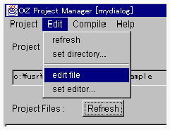

OZソースファイルを編集する
プロジェクトマネージャからプロジェクトファイルを編集することができます。これを行うためには、まず、外部エディタを設定してください。

- <OZソースファイルを編集するための事前条件>
編集に使用する外部エディタを設定してください。
- <OZソースファイルを編集する>
- １． プロジェクトマネージャの Project Files リストの中から編集したいファイルを選択してください。
- ２．Edit メニューから edit file メニュー項目を選択してください。

- 外部エディタで、ファイルが開きます。
その外部エディタの通常操作でプロジェクトファイルを編集することができます。
Project Files リストの中から編集したいファイルを選択しダブルクリックすることによっても、同様のことを行うことができます。
(c) 1996-1998 IPA, ETL, AT21, FSIABC, FXIS,
InArc, MRI, NUL, SBC, Sharp, TEC, TIS. All rights reserved.